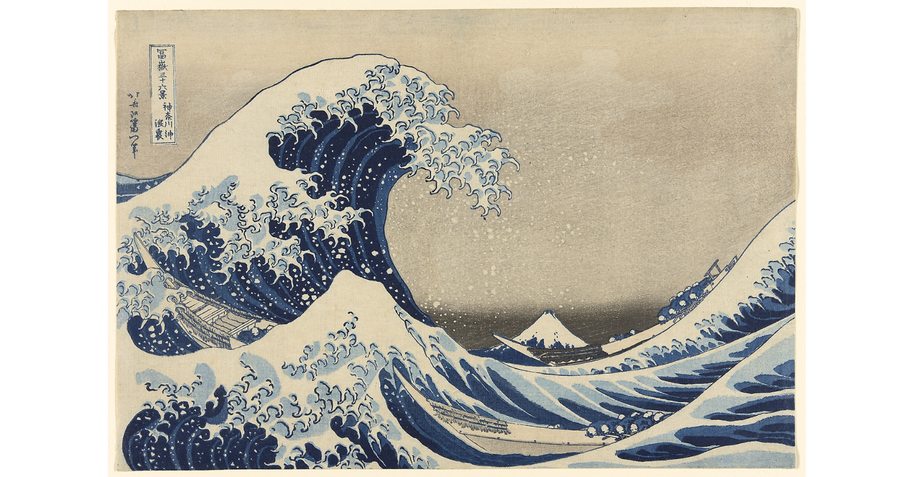

挥手 · 推动浪流
手腕带动水纹，动作越快，
海面越有力量。
INTERACTIVE ART STUDY / 001
一幅静止了近两百年的海，
在你的动作里，再次涌起。

无需摄像头即可体验。开启身体交互后，退后一步，让镜头看到上半身。
手腕带动水纹，动作越快，
海面越有力量。
双臂慢慢展开，
看海浪与声场一起生长。
双手举过头顶，
让细碎的浪花化作星光。
A DIALOGUE ACROSS TIME
北斋以木版凝住巨浪将落未落的瞬间。这件作品以原画为画布，将身体的速度、幅度与姿态，转译为水纹、潮势和声音。远处的富士山依然安定，眼前的海却开始回应你。
鼠标 / 触屏：移动造浪，长按增强潮势，点击激起涟漪。键盘：空格暂停，M 切换声音，S 保存，R 重置。摄像头画面仅在当前浏览器处理，不上传、不保存。
原作资料 · 芝加哥艺术博物馆 ↗ 图像来源 · Wikimedia Commons ↗